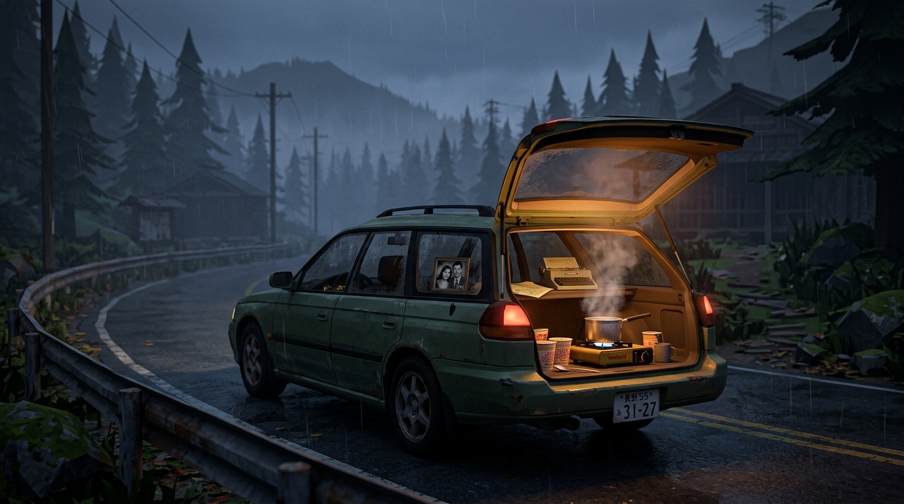
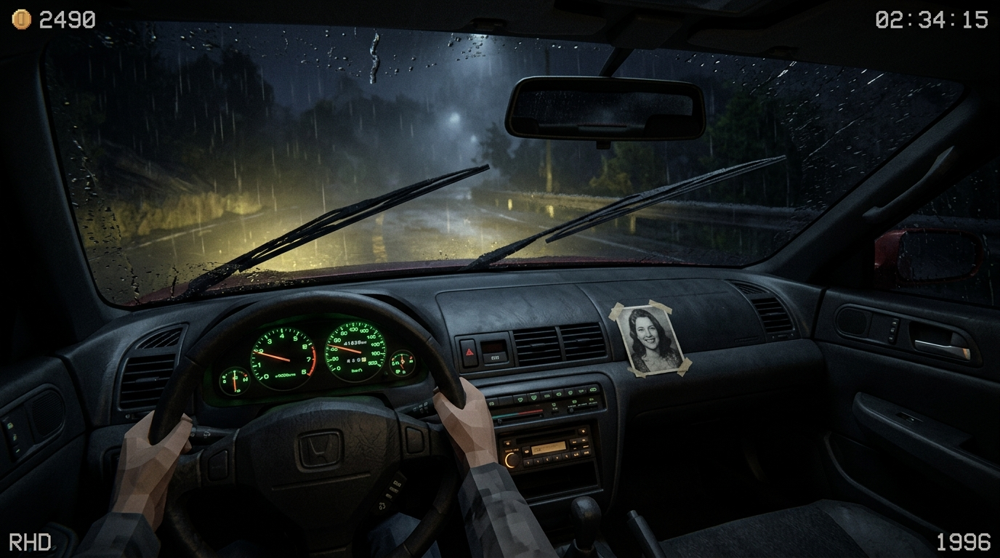
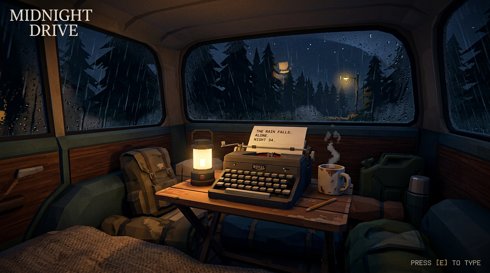

High Concept & Resumen Ejecutivo
OBSOLETO es una experiencia narrativa de ritmo pausado sobre la dignidad y la redención tardía: la travesía de un ex-asalariado despedido que vive en su vagoneta, manteniendo encendido el fuego en la cajuela para financiar el viaje prometido a su difunta esposa y terminar, cada noche, la novela que ella no pudo escribir.
El Coche del Asalariado
Un Toyota Corolla Wagon de los 90. Física pesada a 60–80 km/h: sentir el traqueteo de la chapa, el limpiaparabrisas gastado y el motor enfriándose en el arcén.
Fideos en la Cajuela
Micro-juegos de precisión para hervir agua, picar cebollín con navaja sobre el cofre y tunear ramen de 100 yenes para trabajadores nocturnos.
La Máquina de Escribir de Ella
Minijuego rítmico nocturno donde los golpes secos de las teclas de plomo terminan el manuscrito que ella soñó publicar antes de que el cáncer se la llevara.
Sinopsis Narrativa & Arco del Personaje
Durante un cuarto de siglo fuiste el engranaje invisible de una oficina que nunca aprendió tu nombre de pila. Viste crecer a tus hijos entre horas extra y carpetas de balance; hoy ellos tienen sus propias vidas, sus propias deudas y un silencio incómodo en las llamadas de fin de mes. Cuando tu esposa falleció de cáncer hace tres años tras una larga convalecencia que evaporó tus ahorros, el departamento se volvió un cascarón vacío donde la única constante era el agua hirviendo y los vasos de fideos instantáneos de 100 yenes a los que, con el tiempo y la miseria, aprendiste a darles sazón con lo que sobraba en la alacena.
El Vehículo: El Fiel Carromato de Oficina
¿Qué vehículo tiene un hombre así? No una camper de lujo ni una furgoneta bohemia: su viejo Toyota Corolla Touring Wagon de 1994 (o Nissan AD Van), color blanco comercial desteñido, con tapacubos rayados y parachoques de plástico gris. Lo compró a plazos hace casi dos décadas cuando los niños eran pequeños; con los años se convirtió en el auto de diario que pasaba doce horas bajo el sol en el estacionamiento de la empresa mientras acumulaba horas extra. Huele a té verde embotellado, aire acondicionado añejo y papeles sellados. Es el testigo mudo de un cuarto de siglo de rutina.
El Desalojo: La Montaña de Promesas Incumplidas
Sin dinero para pagar el alquiler de la metrópoli y sin la dignidad para pedirle asilo a tus hijos, llega el día de entregar las llaves. En la penumbra del piso vacío, empacas lo que cabe en la cajuela: una cobija doblada, dos mudas de ropa, una olla y una parrilla portátil de un quemador.
Al levantar los objetos que definen su vida, el pasado le cae encima como plomo:
- 1. La Urna y el Retrato: Las cenizas en tela de seda en el asiento del copiloto y su fotografía pegada con cinta adhesiva al tablero. El único lugar innegociable del coche.
- 2. El Mapa de Papel de Gasolinera: En la carretera no hay internet y los datos móviles son un lujo imposible: vendiste tu smartphone en una casa de empeño para comprar comida. Solo tienes una libreta arrugada con el número de tu hijo y un mapa de carreteras doblado sobre el volante.
- 3. La Vieja Cámara de Rollo (35mm): Comprada hace 15 años entre risas como el «preparativo para las vacaciones» que el trabajo postergó hasta que ella enfermó. Le quedan exactamente 24 fotos en el carrete. Cada foto tomada durante el viaje será revelada en los créditos finales.
- 4. La Máquina de Escribir de Ella: Su tesoro personal. Ella siempre soñó con ser escritora; él le juró que le daría tiempo y calma para terminar su novela. ¿Cuántas promesas rotas? ¿En cuánto le falló mientras ella siempre estuvo ahí con su sonrisa paciente?
El Dilema de la Cabina Verde NTT
En cada pueblo y área de descanso hay cabinas telefónicas públicas de monedas verdes. Con 100 yenes ganados con el caldo, Kenji puede descolgar el auricular y marcar el teléfono fijo de su hijo.
La primera noche en la banqueta de un muelle industrial, enciendes tu hornillo. Dos estibadores atraídos por el vapor caliente preguntan el precio. Con tres monedas en la mano y el tintineo seco al caer en el portavasos del coche, empezó tu segunda vida.
Pilares de Diseño (Core Pillars)
La Dignidad de la Rutina
La victoria del jugador no es volverse un magnate gastronómico ni abrir franquicias. Es tener monedas para 15 litros de gasolina, cambiar una bujía con carbón, comprar un paquete de huevos frescos y tener 30 minutos de paz nocturna.
El Bucle Tripartito
La experiencia divide cada sesión en 3 estados emocionales claros: la soledad contemplativa de la carretera abierta, el dinamismo táctico del despacho de fideos en el pueblo, y la intimidad cálida de la máquina de escribir de noche.
Diegesis Absoluta
Cero elementos de HUD invasivos. El combustible se vigila en la aguja analógica del tablero; el daño del motor, en el termómetro y el vapor del radiador; el dinero, en las monedas del portavasos; el mapa, en un pliego de papel arrugado.
El Bucle Diario (The 24h Loop)
Cada día en el juego sigue un ritmo natural de 24 horas. Explora las cuatro fases de la rutina diaria seleccionando cada etapa a continuación:
Despertar con frío y trazar la ruta
Desempañar los cristales con la manga, limpiar el marco de la foto de tu esposa en el tablero y revisar el mapa de papel doblado en el volante.
Visitar el minisúper o colmado del pueblo: comprar cartuchos de gas butano, galones de agua potable y paquetes de fideos instantáneos en oferta. Revisar nivel de aceite y presión de llantas antes de encender el motor.
Mecánica: Gestión de recursos y plan de rutaCarretera abierta y silencio
Conducción a 60–80 km/h por carreteras nacionales secundarias. El coche se siente pesado en las cuestas; cuidar que el radiador no recaliente.
Sintonizar la radio para encontrar emisoras locales entre la estática o reproducir casetes viejos. Encuentros aleatorios: autoestopistas, camiones varados o puestos de fruta de temporada.
Mecánica: Físicas de inercia y control de temperatura
Abrir cajuela y despachar vapor
Aparcar en un apeadero de tren, cruce de fábricas o plaza de pueblo. Encender el farolillo y el hornillo de gas.
Llegan los clientes nocturnos: obreros, estudiantes y ancianos. Minijuego táctil de hervido justo, picado de cebollín y agregados que aumentan propina. Cada tazón vendido es dinero fresco en monedas.
Mecánica: QTE de cocina y micro-historiasLa máquina de escribir de ella y el descanso
Apagar el fuego, cerrar la cajuela y pasar al interior del vehículo con la manta sobre los hombros. Encender el candil a pilas junto a sus notas amarillentas.
Minijuego rítmico: escribir en la máquina mecánica de tu difunta esposa. Las impresiones y anécdotas de los clientes se entrelazan con las líneas que ella dejó inconclusas a compás de las teclas (*clack-clack-ding*). Al terminar una cuartilla, descansar sabiendo que hoy avanzaste en cumplir su sueño.
Mecánica: Ritmo diegético y redención
Diagrama de Sistemas & Toma de Decisiones
Relación cíclica entre las 4 fases diarias, consumo de recursos y dilemas morales.
flowchart TD
subgraph F1["01. MAÑANA (07:30 - 11:00) — Preparación & Sobriedad"]
A1["Despertar en el Probox
(Desempañar cristales / Aseo)"] --> A2["Revisión Mecánica
(Aceite, agua de radiador, gasolina)"]
A2 --> A3["Planificación en Mapa de Papel
(Trazar ruta secundaria kokudo)"]
A3 --> A4["Compra en Colmado Rural
(Fideos de 100¥, gas butano, raciones)"]
end
subgraph F2["02. LA RUTA (11:00 - 18:30) — Conducción & Dilemas"]
B1["Conducción Contemplativa (60-80 km/h)
(Inercia por carga, radio FM / casetes)"]
B1 --> B2{"Dilemas del Camino"}
B2 -->|Autoestopista anciano| B3["Reorganizar cajas del maletero
(Compañía y anécdota rural)"]
B2 -->|Puesto rústico de carretera| B4["Gastar últimas monedas en setas/pescado
(Mejora el caldo nocturno)"]
B2 -->|Desvío sin señalizar| B5["Gasto extra de nafta y frenos
(Descubrir mirador o aldea oculta)"]
B3 --> B6["Llegada a Apeadero / Michi-no-Eki"]
B4 --> B6
B5 --> B6
end
subgraph F3["03. EL PUESTO (19:00 - 23:00) — El Vapor de la Cajuela"]
C1["Aparcar y abrir portón trasero
(Encender farolillo y hornillo)"] --> C2["Minijuego QTE de Cocina
(Agua hirviendo al punto, cebollín, huevo)"]
C2 --> C3["Servir a Clientes Nocturnos
(Obreros de fábrica, traileros, solitarios)"]
C3 --> C4["Cobro en Monedas Físicas
(Fondo para gasolina y comida de mañana)"]
C4 --> C5["Escucha de Micro-Historias
(Desbloquea recuerdos y temas de escritura)"]
end
subgraph F4["04. LA NOCHE (23:30 - 03:00) — Catarsis & Promesas"]
D1["Cabina Pública NTT Verde
(Insertar moneda de 100¥)"]
D1 --> D2{"Dilema: Llamar al Hijo"}
D2 -->|Confesar la verdad| D3["Alivio moral sincero,
pero culpa por ser una carga"]
D2 -->|Mentir 'Todo va bien'| D4["Orgullo intacto,
pero profunda soledad"]
D3 --> D5["La Máquina de Escribir de Ella"]
D4 --> D5
D5 --> D6["Tecleo Rítmico (clack-clack-ding)
(Relatar la jornada cruda sin adornos)"]
D6 --> D7["Descanso en el Probox
(Un día más cerca de Cabo Sōya)"]
end
F1 --> F2
F2 --> F3
F3 --> F4
D7 -.->|Amanecer: Nuevo Ciclo| F1
Mecánicas de Conducción & La Cabina
La conducción en OBSOLETO no busca adrenalina ni derrapes: busca presencia y textura física. El coche es tu hogar, tu refugio y tu única herramienta de trabajo.
| Sistema del Auto | Indicador Diegético | Impacto Jugable | Solución en Ruta |
|---|---|---|---|
| Combustible | Aguja analógica en cluster principal | Si se agota en carretera, se requiere remolque caro o esperar auxilio. | Repostar en gasolineras rurales o bidón de reserva en cajuela. |
| Temperatura Radiador | Termómetro de agua (sube con cuestas pronunciadas) | Llegar a la zona roja causa vapor blanco y sobrecalentamiento de culata. | Detenerse en el arcén a ralentí o rellenar agua en arroyos/fuentes. |
| Limpiaparabrisas | Escobilla con ruido chirriante | Con lluvia fuerte, una goma gastada deja halos y reduce visibilidad. | Comprar repuesto genérico en desguace o gasolinera. |
| Radio & Casete | Sintonizador manual con dial de frecuencias | La estática aumenta en túneles y gargantas; sintonizar emisoras locales da pistas de eventos. | Coleccionar cintas de casete usadas con música folk y jazz lo-fi. |
Micro-Decisiones y Curiosidad en el Camino
El viaje no es un raíl predecible. En cada tramo de carretera, el asfalto te confronta con dilemas cotidianos:
- ¿Le darás el rait a ese anciano que camina solo bajo la llovizna? Ganas su compañía y una anécdota entrañable sobre el Japón rural que ya no existe, pero tendrás que mover las cajas del maletero al piso para hacerle un rincón.
- ¿Te detendrás a comprar en ese puesto solitario al borde de la carretera? Gastar tus pocas monedas en setas silvestres o pescado seco puede dejarte al límite del combustible, pero enriquecerá el caldo que vendas al anochecer.
- ¿Seguirás tu plan estricto o tomarás el desvío que dice «Pueblo X: Entrada a 200m» solo por curiosidad? Dejarte tentar por lo que hay detrás de esa cumbre montañosa gasta frenos y combustible, pero revela los paisajes más conmovedores y los comensales más agradecidos.
El Puesto de Fideos Instantáneos Tuneados
Kenji no es un chef gourmet: es un tipo que pasó años comiendo fideos de 100 yenes y aprendió a hacerlos memorables con casi nada.
Minijuego de Preparación Rápida
- El Vertido del Agua: Mantener presionado el gatillo hasta la línea interna de nivel de agua. Pasarse vuelve el caldo aguado; quedarse corto deja los fideos duros.
- El Picado Rítmico: Sobre una pequeña tabla de madera apoyada en la moldura de la cajuela, cortar cebollín fresco a compás con un cuchillo plegable.
- El Huevo Pochado: Romper un huevo crudo en el momento preciso de reposo para que la yema se cueza suave con el calor residual del caldo tapado.
- Gotas de Topping: Aceite de sésamo tostado, copos de chile o nori tostado para otorgar propina extra según el gusto del cliente.
Perfiles de Clientes & Micro-Historias
- Obreros Fabriles: Turno saliente a las 22:00. Buscan caldo bien salado y calor rápido. Dejan monedas sin rodeos.
- Camioneros de Larga Distancia: Comparten información sobre derrumbes en puertos de montaña o desvíos policiales.
- Estudiantes y Jóvenes Desorientados: Comen en silencio, cuentan sus dudas sobre el futuro y desbloquean temas creativos.
- Ancianos de Pueblos Vaciados: Trueque de patatas, puerros o setas de su huerto a cambio de un plato caliente y compañía.
La Máquina de Escribir de Ella: Escribir la Verdad sin Adornos
Al caer la noche, la cabina trasera de la vagoneta se convierte en un santuario íntimo. Sobre una tabla de madera descansa la vieja máquina de escribir mecánica de su difunta esposa, rodeada de sus libretas con anotaciones a medio terminar.
Kenji no es escritor de ficción ni sabe inventar tramas grandilocuentes. Solo cuenta su historia, rememorando su día a día sin adornos: el frío del volante por la mañana, el zumbido del hornillo, las tres monedas dejadas por un camionero, el dolor sordo de espalda y el silencio al colgar la cabina telefónica. Ya que su esposa no está para escribir su libro, él cumplirá su sueño regalándole al mundo la crónica cruda y honesta de este viaje.
Mecánica Rítmica Diegética
No se trata de escribir prosa libre en un teclado, sino de un minijuego de ritmo analógico donde las experiencias del día completan el manuscrito de ella:
- Las frases clave inspiradas por los clientes del día aparecen como compases rítmicos sobre el papel.
- Al pulsar a tiempo, el sonido metálico del plomo contra el rodillo (*clack-clack-clack*) genera una cadencia musical relajante acompañada de piano suave.
- Al llegar al margen derecho suena el timbre (*¡ding!*); el jugador debe presionar retorno de carro (*shhh-clack*) para abrir la siguiente línea.
- Si se pierde el compás repetidamente, dos tipos de plomo chocan y se atascan físicamente; el jugador debe desatorarlos manualmente antes de continuar.
- Al reunir varias cuartillas, se pueden enviar por correo postal en las oficinas de los pueblos hacia pequeños certámenes o publicaciones locales firmadas bajo el nombre de ella.
Gestión de Espacio & Inventario (Tetris en la Cajuela)
El volumen interior del coche es finito. Todo lo que Kenji posee debe convivir en la parte trasera sin bloquear el espacio para dormir ni poner en riesgo la seguridad.
Reglas de Carga
El Asiento del Copiloto: Innegociable. Allí viaja la urna de cenizas con el retrato de su esposa fijado con cinta adhesiva al salpicadero.
Cajas de Fideos vs. Saco de Dormir: Comprar 3 cajas de fideos al por mayor en una central de abastos ahorra yenes, pero obliga a dormir encogido esa noche.
Llevar Pasajeros: Para aceptar a un autoestopista o hacer una entrega de favores entre pueblos, se deben reacomodar los bultos al piso.
Artículos Clave del Inventario
- Hornillo portátil de 1 quemador + latas de gas butano.
- Olla pequeña de aluminio y tetera para servir caldo.
- Garrafa de agua potable de 10 litros.
- Saco de dormir de invierno y manta doblada.
- Máquina de escribir mecánica compacta y paquete de cuartillas limpias.
- Caja de herramientas: cinta americana, llave de cruceta, linterna y bujías.
Grafo de Nodos & Biomas (Simulador de Ruta)
En lugar de diseñar cientos de kilómetros de carreteras abiertas a mano —inviable para un desarrollo independiente—, OBSOLETO implementa un grafo de nodos tipo roguelike donde los tramos de carretera 3D se ensamblan proceduralmente a partir de 20 módulos maestros.
Simulador de Ruta Vial // Haz clic en cada nodo para inspeccionar el bioma:
Nodo 1: Muelle Industrial & Zona Portuaria
Salida de turno obrero a las 22:00. Alta afluencia de trabajadores agotados que buscan sopa hirviendo y caldo espeso. Clima costero húmedo, vigilancia policial moderada.
Demanda de Fideos: Alta | Riesgo de Multa: Medio | Clima: Llovizna y viento marino
Modos de Juego & El Clímax en Cabo Sōya
El Peregrinaje (Campaña)
Travesía completa de 6 a 8 horas a través de 4 regiones japonesas. Desafío equilibrado de mantenimiento del coche, dinero para gasolina y avance de la novela.
Ruta Corta (Modo Relato)
Sesión autocontenida de ~2 horas que recorre 2 regiones específicas. Ideal para partidas de tarde con arco narrativo completo.
Camino Infinito (Endless Zen)
Se desbloquea al finalizar la historia. Carreteras procedurales sin fin, radio siempre sintonizada y libreta inagotable para relajarse o streaming.
El asfalto se acaba donde la tierra muere frente al mar gris y helado del norte. El viento frío azota el parabrisas de la vagoneta. Apagas el motor; el radiador cruje en silencio mientras se enfría tras miles de kilómetros. Bajas del coche, hierves agua en la tetera sobre el cofre y sirves dos tazones humeantes: uno para ti y otro que colocas junto a la pequeña urna de cerámica y su retrato.
Dentro de la cabina, iluminado por el candil a pilas, tecleas en la máquina de escribir de tu esposa los últimos párrafos del manuscrito que ella empezó hace dos décadas: una historia tejida con los dolores y esperanzas de la gente trabajadora que conociste en la ruta. Al amanecer, esparces sus cenizas sobre las olas. Has cumplido lo que juraste: llevarla hasta el fin del camino y regalarle al mundo el libro que ella siempre soñó escribir. No hay victoria comercial; solo el mar en calma y el sonido del motor arrancando en paz.
Identidad Artística & Diseño Sonoro
Estética Visual: Low-Poly Retro Stylized
Inspirado en la era dorada de 32 bits (PS1/Saturn) pero con técnicas modernas de render:
- Modelos tridimensionales con conteo reducido de polígonos y texturas planas o pixeladas con ligero dithering.
- Iluminación volumétrica atmosférica: conos de luz halógena cortando la niebla en curvas solitarias.
- Gotas de lluvia shaders que resbalan por las ventanillas y el parabrisas.
- El contraste entre el exterior frío y desolado (tonos azul pizarra) y la calidez del interior del auto (naranja fuego y verde fósforo).
Diseño Sonoro: El 50% de la Experiencia
El silencio y el detalle acústico cargan con el peso emocional del videojuego:
- Sonido diegético fiel: el murmullo continuo de la lluvia en el techo de chapa fina.
- El ritmo seco del limpiaparabrisas (*chwic-chwic*).
- El zumbido del hornillo portátil y el gorgoteo del agua al hervir.
- El impacto metálico de las teclas mecánicas (*clack-clack-ding*).
- Banda sonora ambiental con guitarra acústica solitaria, jazz lo-fi en casete y notas melancólicas de piano en los momentos de mayor soledad.
Viabilidad Técnica para Desarrollador en Solitario
Este proyecto fue concebido intencionalmente para evitar la trampa del exceso de alcance (scope creep). Todas las decisiones creativas responden a un pragmatismo técnico riguroso:
| Elemento de Juego | Solución Convencional (Costosa) | Solución Pragmática en OBSOLETO |
|---|---|---|
| Mundo Abierto | Modelar cientos de km a mano | Grafo de nodos 2D + 20 tramos de carretera modular 3D |
| Cinemáticas & Actuación | Captura de movimiento y actores de voz | Narrativa diegética por texto, diseño sonoro y micro-gestos |
| Modelos de Personajes | Foliage denso, rostros faciales HD | Modelos low-poly con retratos 2D ilustrados en diálogos |
| Minijuegos de Cocina | Físicas de fluidos complejas en 3D | Minijuegos QTE de precisión y timing 2D limpios |
Hoja de Ruta de Prototipado (Roadmap en 4 Fases)
Fase 1: El Tablero y la Inercia
Controlador básico de coche con físicas de inercia pesada y cámara interior fija en cabina. 3 tramos de carretera modulares con niebla y lluvia.
Fase 2: La Cajuela y los Fideos
Cámara fija en el maletero abierto. Hornillo funcional, minijuego de vertido de agua y cebollín. Sistema de monedas en el portavasos y cliente de prueba.
Fase 3: La Máquina y el Mapa
Minijuego rítmico de máquina de escribir con audio diegético y atasco mecánico. Pantalla de mapa de carreteras en papel con bifurcaciones de nodos.
Fase 4: Vertical Slice (Demo Jugable)
Integración de las tres capas en un ciclo diario completo (1 pueblo, 1 viaje, 1 noche). Preparación de demo para Steam / itch.io / Reddit.